그래프로 공정 상태 이해하기
오늘의 질문: "그림으로 미리 본 패턴을, 코드로 그대로 재현할 수 있을까?"
학습 목표
- 선·막대·히스토그램·산점도·박스플롯이 각각 어떤 질문에 답하는 그래프인지 고를 수 있다.
- 그래프의 가로축·세로축, 점·막대·상자 하나가 무엇을 뜻하는지 읽고 한 문장으로 말할 수 있다.
- 평균 같은 숫자 하나만 보면 놓치는 것(퍼짐, 시간에 따른 변화)을 그래프로 찾아낼 수 있다.
- Orange3로 먼저 본 그림을 Matplotlib 코드로 다시 그려, 같은 결론이 나오는지 확인할 수 있다.
선수 지식: 4차시(열 선택·조건 검색), 5차시(describe()로 숫자 요약 보기)
왜 이걸 배워야 할까?
- 5차시에는
describe()로 평균 같은 숫자 요약을 봤다. 숫자 요약은 편리하지만, 숫자 하나로 줄이는 순간 사라지는 정보가 있다. - 오늘 데이터에서 설비 4대의 평균 온도를 강사가 미리 계산해 보면 아래와 같다.
| 설비 | 기록 수 | 평균 온도 |
|---|---|---|
| EQ-01 | 47건 | 302.8℃ |
| EQ-02 | 37건 | 303.7℃ |
| EQ-03 | 46건 | 302.2℃ |
| EQ-04 | 50건 | 302.7℃ |
- 평균만 보면 네 설비가 모두 302~304℃로 거의 같다. "네 설비 상태가 비슷하다"고 결론 내리게 된다.
- 그런데 같은 데이터를 박스플롯(이 차시 뒷부분에서 그린다)으로 그리면 EQ-02만 상자가 위아래로 길게 늘어나 있다. EQ-02는 온도가 낮을 때는 293.7℃, 높을 때는 314.7℃까지 오르내렸다.
- 이 과정에서 정한 학습용 정상 온도 범위(295~305℃)를 벗어난 기록도 EQ-02는 37건 중 14건이다. 다른 설비는 46~50건 중 9~10건이다.
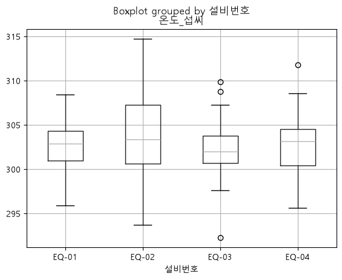
같은 데이터를 박스플롯으로 그린 결과(노트북 6단계). 평균이 비슷해도 EQ-02만 길게 퍼져 있다.
지난 시간 복습
- 1차시: 열 하나보다 여러 열을 함께 볼 때 단서가 보였다(불합격 수 + 공정명).
- 4차시:
df["열 이름"]으로 열을 고르고,df[조건]으로 원하는 행만 골랐다. - 5차시: 빈 칸과 있을 수 없는 값을 정리하고,
describe()로 숫자 요약을 봤다. - 오늘은 이미 정리된 새 데이터(week06)를 그림으로 본다. 그래프 대부분은 열 두 개를 함께 놓고 그린다. 1차시의 "여러 열 함께 보기"를 그림으로 하는 셈이다.
오늘 데이터의 열이 공장에서 무엇을 뜻하는지 다시 짚고 시작하자. 모두 교육용으로 만든 가상 데이터다.
| 열 이름 | 공장에서 뜻하는 것 |
|---|---|
측정시간 | 기록이 남은 날짜와 시각(2024-03-01 ~ 2024-04-27) |
로트번호 | 함께 이동하는 웨이퍼 묶음(상자)의 번호 |
설비번호 | 작업을 한 기계(EQ-01 ~ EQ-04, 4대) |
공정명 | 어떤 작업이었는지(산화·포토·식각·증착·세정) |
온도_섭씨 | 설비 안 작업 공간(챔버)의 온도 |
압력_Pa | 챔버 압력. 가상 값이라 크기를 실제 압력으로 해석하지 않고, 기록끼리 비교만 한다 |
두께_nm | 작업 뒤 웨이퍼 위 막의 두께(측정값). nm(나노미터)는 10억분의 1m |
진동_mm_s | 설비가 흔들리는 세기(1초에 몇 mm 움직이는 빠르기) |
처리시간_sec | 작업 한 번에 걸린 시간(초) |
합격여부 | 검사 결과. 1 = 합격, -1 = 불합격 |
그래프 읽기 첫걸음 — 어떤 질문에 어떤 그래프?
- 그래프는 표의 숫자를 위치와 길이로 바꾼 그림이다. 사람 눈은 숫자 180개를 읽는 것보다 막대 길이나 점 위치의 차이를 훨씬 빨리 알아챈다.
- 어떤 그래프든 읽는 순서는 같다.
- 축 이름 읽기 — 가로축(x축)은 무엇을 기준으로 늘어놓았나? 세로축(y축)은 무엇을 쟀나?
- 하나가 무엇인지 — 점 하나, 막대 하나, 상자 하나가 무엇을 뜻하나?
- 전체 모양 보기 — 올라가나? 어디에 몰려 있나? 어느 것이 길거나 높나?
- 그래프는 질문에 맞춰 고른다. 아래 표가 오늘의 지도다.
| 알고 싶은 것(질문) | 그래프 | 하나가 뜻하는 것 | 오늘 그릴 예 |
|---|---|---|---|
| 시간이 지나며 어떻게 변했나? | 선 그래프 | 선 위 꺾이는 점 하나 = 그 시각의 기록 하나 | 시간에 따른 온도 |
| 그룹마다 몇 건인가? | 막대그래프 | 막대 하나 = 그룹(설비) 하나의 건수 | 설비별 기록 건수 |
| 값이 주로 어디에 몰려 있나? | 히스토그램 | 막대 하나 = 온도 구간 하나에 들어간 기록 수 | 온도 분포 |
| 두 값이 함께 움직이나? | 산점도 | 점 하나 = 기록(행) 하나 | 온도와 두께 |
| 그룹마다 얼마나 들쭉날쭉한가? | 박스플롯 | 상자 하나 = 그룹 하나의 값 전체를 요약 | 설비별 온도 |
① Orange3로 먼저 훑어보기
week06_process_visualization.csv를 열고, 시각화 위젯 세 개를 연결한다.
- Scatter Plot — x축
온도_섭씨, y축두께_nm. 점들이 어느 방향으로 기울어 있나? - Box Plot — 변수
온도_섭씨, Subgroups설비번호. 어느 설비의 상자가 가장 긴가? - Distributions —
온도_섭씨. 막대가 가장 높은 곳은 몇 도 근처인가?
- 위젯 사용법이 낯설다면 부록: Orange3 시작하기를 먼저 본다.
실제 Orange3 화면으로 확인하기
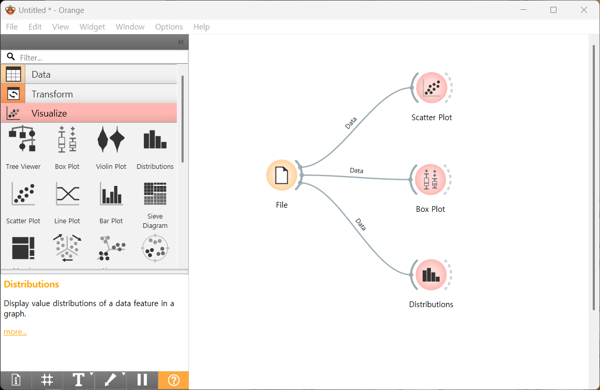
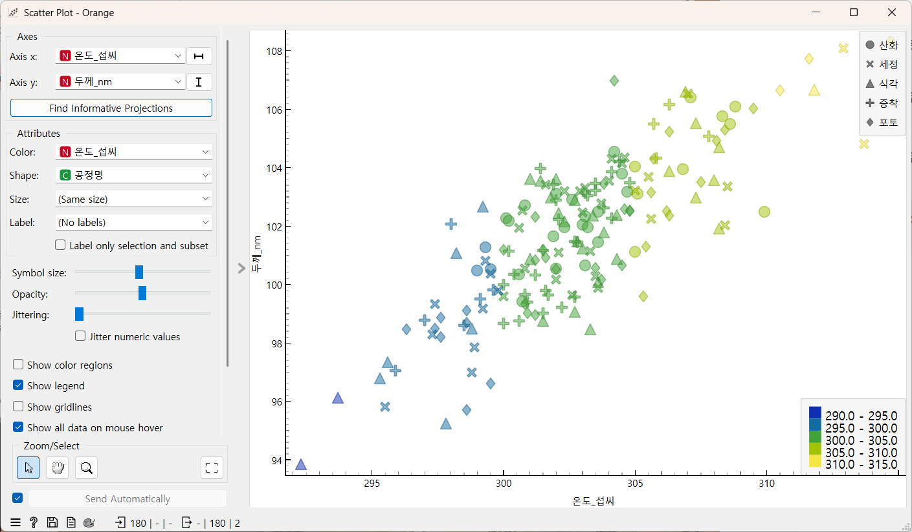
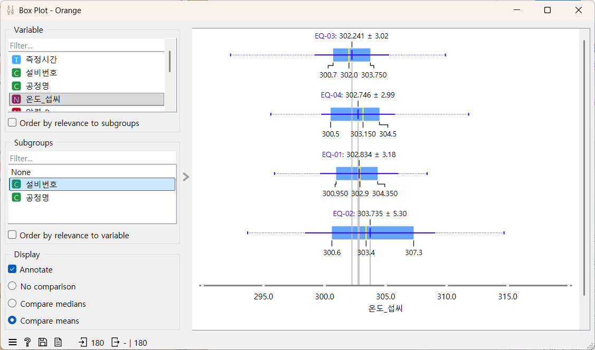
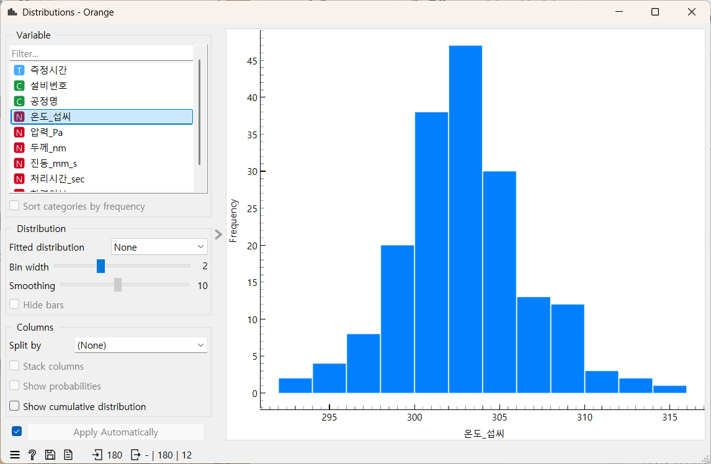
- Orange3 화면은 색과 모양이 조금 다르지만, 같은 데이터라면 같은 이야기를 해야 한다. 아래에서 확인한다.
② 파이썬으로 그리기 — 준비
- Matplotlib(맷플롯립)은 파이썬에서 그래프를 그리는 도구다. 보통
plt라는 짧은 이름으로 불러 쓴다. plt.rcParams[...]두 줄은 그래프 글자를 한글 글꼴로 바꾸는 설정이다. 빼먹으면 한글이 네모(□)로 나온다. Mac은"Malgun Gothic"대신"AppleGothic"을 쓴다.
import pandas as pd
import matplotlib.pyplot as plt
plt.rcParams["font.family"] = "Malgun Gothic" # 한글 글꼴(Windows)
plt.rcParams["axes.unicode_minus"] = False # 음수 부호 깨짐 방지
df = pd.read_csv("../../data/weekly/week06/week06_process_visualization.csv", encoding="utf-8-sig")
df.head()| 측정시간 | 로트번호 | 설비번호 | 공정명 | 온도_섭씨 | 압력_Pa | 두께_nm | 진동_mm_s | 처리시간_sec | 합격여부 | |
|---|---|---|---|---|---|---|---|---|---|---|
| 0 | 2024-03-01 05:00 | LOT-0472 | EQ-04 | 식각 | 295.6 | 1026.3 | 97.35 | 0.507 | 124.3 | -1 |
| 1 | 2024-03-01 17:00 | LOT-0206 | EQ-04 | 증착 | 301.6 | 1008.5 | 99.79 | 0.487 | 123.5 | 1 |
| 2 | 2024-03-01 19:00 | LOT-0403 | EQ-04 | 포토 | 300.8 | 1006.1 | 99.34 | 0.501 | 114.9 | 1 |
| 3 | 2024-03-02 00:00 | LOT-0468 | EQ-01 | 식각 | 297.8 | 1010.0 | 95.23 | 0.467 | 117.0 | 1 |
| 4 | 2024-03-02 03:00 | LOT-0117 | EQ-01 | 산화 | 299.5 | 1014.7 | 100.53 | 0.544 | 115.2 | 1 |
측정시간을 날짜로 바꾸기 — pd.to_datetime()
측정시간의2024-03-01 05:00은 지금 컴퓨터에게 글자(문자열)일 뿐이다. 날짜라는 걸 모른다.pd.to_datetime()은 이 글자를 달력 속 날짜·시각으로 바꾼다. 그래야 선 그래프의 가로축이 3월 1일, 3월 8일 … 처럼 실제 시간 간격대로 그려진다.
df["측정시간"] = pd.to_datetime(df["측정시간"])
df["측정시간"].head(3)0 2024-03-01 05:00:00 1 2024-03-01 17:00:00 2 2024-03-01 19:00:00 Name: 측정시간, dtype: datetime64[us]
- 맨 아래
dtype: datetime64[us]가 "이제 날짜·시각으로 알아본다"는 표시다. 뒤의[us]는 pandas 버전에 따라[ns]로 보이기도 하며, 신경 쓰지 않아도 된다.
그래프 코드의 공통 틀
오늘 그래프 코드는 대부분 같은 네 줄 틀이다. 첫 줄의 그리기 명령만 그래프마다 바뀐다.
| 줄 | 하는 일 |
|---|---|
plt.그리기명령(가로축 값, 세로축 값) | 그래프를 그린다(plot·bar·hist·scatter) |
plt.xlabel("…") | 가로축 이름을 붙인다 |
plt.ylabel("…") | 세로축 이름을 붙인다 |
plt.show() | 지금까지 그린 그림을 화면에 보여주고 마무리한다 |
plt.show() 전까지 같은 그림 위에 겹쳐 그려진다.
노트북처럼 그래프마다 셀을 나누자.
그래프 1. 선 그래프 — 시간이 지나며 어떻게 변했나
- 가로축 = 측정시간. 왼쪽이 3월 초, 오른쪽이 4월 말이다.
- 세로축 = 온도. 위로 갈수록 뜨겁다.
- 선이 꺾이는 점 하나 = 그 시각의 기록 하나. 180개 기록을 시간 순서대로 이었다.
- 가는 선이 위아래로 많이 흔들려도 놀라지 말자. 흔들림 전체가 조금씩 위로 올라가는지를 본다.
plt.plot(df["측정시간"], df["온도_섭씨"])
plt.xticks(rotation=45) # 날짜 글자를 45도 기울여 겹치지 않게
plt.xlabel("측정시간")
plt.ylabel("온도_섭씨")
plt.show()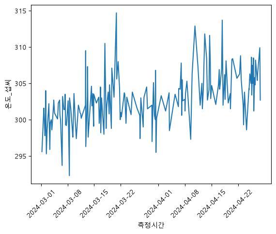
노트북 2단계 실행 결과. 300℃ 아래로 내려간 기록이 3월에는 104건 중 29건이었지만, 4월에는 76건 중 5건뿐이다.
plt.plot(가로축, 세로축)은 점을 순서대로 이어 선을 긋는다.plt.xticks(rotation=45)는 가로축 날짜 글자를 45도 기울인다. 빼면 날짜끼리 겹쳐 읽기 어렵다.
- 전체 평균 온도는 302.8℃다. 이 숫자 하나로는 "시간에 따라 변했다"는 사실이 보이지 않는다.
- 강사가 달별로 나눠 계산해 보면 3월 기록 104건의 평균은 301.4℃, 4월 기록 76건의 평균은 304.8℃다. 선 그래프에서 본 "조금씩 위로"가 숫자로도 확인된다.
- 이렇게 시간이 지나며 값이 한쪽으로 조금씩 밀려가는 것을 드리프트(drift)라고 한다. 매일 몇 초씩 늦어지는 시계를 떠올리면 된다. 하루만 보면 티가 안 나지만 한 달이 지나면 크게 어긋난다.
- 실제 공장에서도 설비 부품이 조금씩 닳거나 안쪽에 찌꺼기가 쌓이면 값이 서서히 변할 수 있다. 그래서 선 그래프로 추세를 꾸준히 지켜본다. (오늘 데이터의 드리프트는 연습을 위해 일부러 넣은 것이다.)
그래프 2. 막대그래프 — 그룹마다 몇 건인가
- 가로축 = 설비 이름. 이름 사이에는 크고 작은 순서가 없다.
- 세로축 = 기록 건수. 막대는 0에서 시작하므로 막대 높이를 그대로 비교하면 된다.
- 막대 하나 = 설비 하나의 기록 건수.
counts = df["설비번호"].value_counts()
print(counts)
plt.bar(counts.index, counts)
plt.xlabel("설비번호")
plt.ylabel("기록 건수")
plt.show()설비번호 EQ-04 50 EQ-01 47 EQ-03 46 EQ-02 37 Name: count, dtype: int64
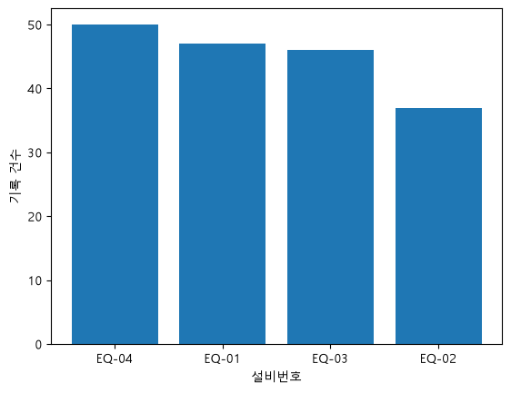
노트북 3단계 실행 결과. 위 숫자 네 개가 막대 네 개가 되었다.
value_counts()는 열 안의 값마다 몇 건인지 세어, 많은 순서로 늘어놓는다. 그래서 막대도 EQ-04부터 나온다.plt.bar(이름들, 숫자들)—counts.index는 설비 이름(막대 아래 이름표),counts는 건수(막대 높이)다.- 해석: EQ-04가 50건으로 가장 많고, EQ-02가 37건으로 가장 적다.
그래프 3. 히스토그램 — 값이 주로 어디에 몰려 있나
- 가로축 = 온도 숫자. 이름이 아니라 이어진 숫자라서 막대끼리 붙어 있다.
- 세로축 = 그 온도 구간에 들어간 기록 수.
- 막대 하나 = 온도 구간 하나.
bins=10은 가장 낮은 온도(292.3℃)부터 가장 높은 온도(314.7℃)까지를 똑같은 폭으로 10칸(한 칸 약 2.2℃)으로 나누라는 뜻이다.
plt.hist(df["온도_섭씨"], bins=10)
plt.xlabel("온도_섭씨")
plt.ylabel("기록 건수")
plt.show()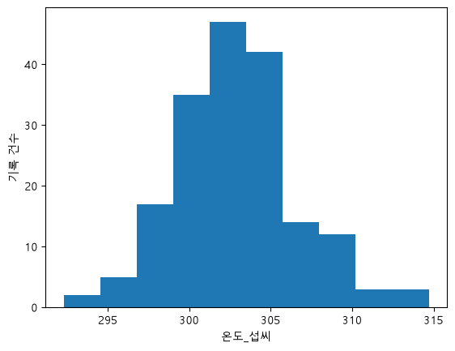
노트북 4단계 실행 결과. 가운데가 높고 양쪽 끝이 낮은 산 모양이다.
- 가장 높은 막대는 약 301.3~303.5℃ 구간으로, 47건이 들어 있다.
- 가운데 세 막대(약 299.0~305.7℃)에 180건 중 124건이 몰려 있다. 온도는 주로 300℃ 언저리에서 기록됐다.
- 양쪽 끝(295℃ 아래, 310℃ 위) 막대는 아주 낮다. 그런 기록이 드물다는 뜻이다.
그래프 4. 산점도 — 두 값이 함께 움직이나
- 점 하나 = 기록(행) 하나. 그 행의 온도가 가로 위치, 두께가 세로 위치가 된다. 예: 첫 행(295.6℃, 97.35nm)은 왼쪽 아래쪽의 점 하나다.
- 가로축 = 온도, 세로축 = 두께. 같은 행에 있는 두 열을 짝지어 찍는다. 1차시의 "같은 행의 다른 열 함께 보기"를 그림으로 한 것이다.
- 전체 모양 = 점 180개가 어느 방향으로 기울어 있는지 본다.
예시 일러스트레이션 · 실제 데이터 아님
산점도에서 볼 세 가지 모양(예시 그림). 오늘 데이터가 어디에 가까운지 보자.
plt.scatter(df["온도_섭씨"], df["두께_nm"])
plt.xlabel("온도_섭씨")
plt.ylabel("두께_nm")
plt.show()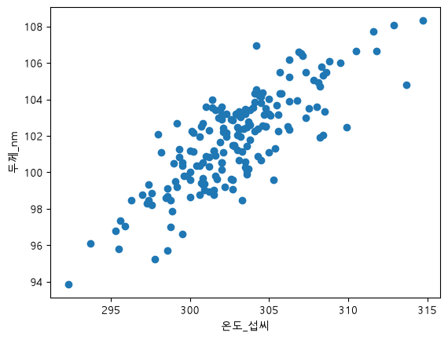
노트북 5단계 실행 결과. 점들이 왼쪽 아래에서 오른쪽 위로 기운 띠를 이룬다.
- 점들이 오른쪽 위로 기울어 있다. 온도가 높은 기록일수록 두께도 두꺼운 편이다. 두 값이 함께 움직인다.
- 강사가 미리 계산한 숫자로 확인하면, 온도 300℃ 미만 34건의 평균 두께는 98.6nm, 305℃ 이상 43건의 평균 두께는 104.4nm다.
- 두 값이 "얼마나 강하게" 함께 움직이는지를 숫자 하나로 재는 방법은 8차시에 배운다. 오늘은 그림으로 감만 잡는다.
압력_Pa로 바꿔(plt.ylabel도 함께) 그려 보자.
두께 산점도와 점의 모양이 어떻게 다른가?
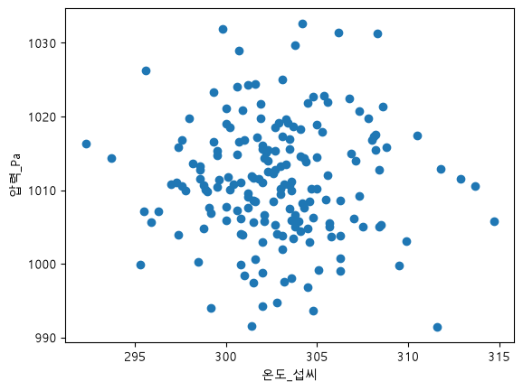
점들이 어느 쪽으로도 기울지 않고 둥글게 흩어져 있다. 온도 300℃ 미만 기록과 305℃ 이상 기록의 평균 압력도 1011.6과 1011.8로 거의 같다. 이 데이터에서 온도와 압력은 함께 움직이지 않는다. 같은 "온도" 열이라도 무엇과 짝지어 보느냐에 따라 보이는 것이 다르다.그래프 5. 박스플롯 — 그룹마다 얼마나 들쭉날쭉한가
박스플롯은 처음 보면 가장 낯선 그래프다. 한 설비의 온도 기록을 낮은 것부터 높은 것까지 한 줄로 세운 뒤, 그 줄을 네 토막으로 나눠 상자로 요약한 그림이라고 생각하면 된다.
예시 일러스트레이션 · 실제 데이터 아님
박스플롯 한 개의 각 부분(예시 그림). 상자가 길수록 값이 들쭉날쭉하다.
- 상자 하나 = 설비 하나의 온도 기록 전체를 요약한 것. 가로축에 설비, 세로축에 온도가 놓인다.
- 상자 안에는 가운데 절반(50%)의 기록이 들어 있다. 상자가 길수록 들쭉날쭉하다.
- 가운데 선은 중앙값이다. 기록을 줄 세웠을 때 한가운데 값으로, "보통 이 정도"를 뜻한다.
- 수염(위아래로 뻗은 선)은 나머지 값들이 퍼진 범위다. 단, 상자 끝에서 상자 길이의 1.5배보다 더 멀리 떨어진 값은 수염에 넣지 않고 동그라미 점으로 따로 찍는다.
df.boxplot(column="온도_섭씨", by="설비번호")
plt.show()노트북 6단계 실행 결과. 위의 "Boxplot grouped by 설비번호"는 "설비번호로 나눈 박스플롯"이라는 뜻으로, 자동으로 붙는 제목이다.
df.boxplot(column="값을 볼 열", by="그룹을 나눌 열")— 표(DataFrame)에 바로 붙여 쓰는 명령이라, 설비별로 나누는 일까지 한 줄로 해준다.- 해석 1: EQ-02의 상자가 가장 길다. 상자 범위가 300.6~307.3℃로 폭이 6.7℃다. 다른 설비는 3.1~4.1℃다.
- 해석 2: 가운데 선(중앙값)은 네 설비 모두 302~303℃ 근처로 비슷하다. "보통 온도"는 같지만 흔들리는 폭이 다르다.
- 해석 3: EQ-03(3개)과 EQ-04(1개)에 동그라미 점이 있다. EQ-02는 값이 넓게 퍼져 있어서 오히려 동그라미 없이 수염이 길다.
숫자로 다시 확인하기
그림에서 본 "EQ-02가 가장 들쭉날쭉하다"를 숫자로 확인한다. 5차시의 describe()를 설비별로 나눠 실행한 것이다.
groupby(묶어서 계산하기)는 7차시에 배우므로 오늘은 실행해서 결과만 읽는다.
print(df.groupby("설비번호")["온도_섭씨"].describe().round(1))count mean std min 25% 50% 75% max 설비번호 EQ-01 47.0 302.8 3.2 295.9 301.0 302.9 304.4 308.4 EQ-02 37.0 303.7 5.4 293.7 300.6 303.4 307.3 314.7 EQ-03 46.0 302.2 3.1 292.3 300.7 302.0 303.8 309.9 EQ-04 50.0 302.7 3.0 295.6 300.4 303.2 304.5 311.8
| 열 | 뜻 | 박스플롯에서는 |
|---|---|---|
count | 기록 수 | - |
mean | 평균 | 박스플롯에는 안 나온다 |
std | 표준편차. 값들이 평균에서 보통 얼마나 떨어져 있는지(퍼짐의 크기) | 상자·수염이 길수록 크다 |
min / max | 가장 작은 값 / 가장 큰 값 | 수염 끝이나 동그라미 점 |
25% / 50% / 75% | 줄 세웠을 때 1/4 지점 / 한가운데 / 3/4 지점 | 상자 아래 끝 / 가운데 선 / 상자 위 끝 |
mean(평균)은 302.2~303.7로 비슷하다. 평균만 보면 차이가 안 보인다.std(퍼짐)는 EQ-02가 5.4로 가장 크다. 다른 설비는 3.0~3.2다.- EQ-02의
25%~75%는 300.6~307.3이다. 박스플롯에서 본 EQ-02 상자의 아래 끝·위 끝과 같은 숫자다. - Orange3 Box Plot, Matplotlib 박스플롯, 숫자 요약이 모두 같은 결론을 낸다. EQ-02의 온도 변동이 가장 크다.
실습: 그래프 다섯 가지 따라 그리기
학생용 노트북 week06_student.ipynb를 열고 위에서 아래로 차례대로 진행한다.
____(밑줄 네 개)로 비어 있는 곳만 채우면 된다.
read_csv()를 실행하고, pd.to_datetime()으로
측정시간을 날짜로 바꾼다. (노트북 1단계)핵심 용어 카드
선 그래프
- 한 줄 설명
- 시간처럼 순서가 있는 값을 차례로 이어, 변화를 보여주는 그래프.
- 쉬운 비유
- 아이의 키를 매년 기록해 이은 성장 기록표.
- 데이터에서의 예
plt.plot(df["측정시간"], df["온도_섭씨"])— 3월보다 4월 온도가 높다.- 자주 하는 오해
- 설비 이름처럼 순서가 없는 것을 선으로 이으면, 없는 추세가 있는 것처럼 보인다.
막대그래프
- 한 줄 설명
- 그룹(이름)마다 건수나 크기를 막대 높이로 비교하는 그래프.
- 쉬운 비유
- 반장 선거 개표 결과를 후보별 막대로 세운 것.
- 데이터에서의 예
plt.bar(counts.index, counts)— EQ-04 50건, EQ-02 37건.- 자주 하는 오해
- 기록 수가 다른 그룹끼리 건수만 비교하면 불공평할 수 있다(7차시 비율).
히스토그램
- 한 줄 설명
- 숫자 범위를 같은 폭의 칸(bin)으로 나눠, 칸마다 몇 개인지 막대로 보여주는 그래프.
- 쉬운 비유
- 반 친구 키를 5cm 칸으로 나눠 칸마다 몇 명인지 센 것.
- 데이터에서의 예
plt.hist(df["온도_섭씨"], bins=10)— 약 301.3~303.5℃ 칸이 가장 높다.- 자주 하는 오해
- 가로축을 이름(범주)으로 착각하기 쉽다. 가로축은 이어진 숫자 구간이다.
산점도
- 한 줄 설명
- 같은 행의 두 숫자를 가로·세로 위치로 삼아 점을 찍어, 두 값이 함께 움직이는지 보는 그래프.
- 쉬운 비유
- 반 친구마다 키(가로)와 몸무게(세로)를 점 하나로 찍은 지도.
- 데이터에서의 예
plt.scatter(df["온도_섭씨"], df["두께_nm"])— 오른쪽 위로 기운다.- 자주 하는 오해
- 함께 움직이면 원인이라고 생각하기 쉽다. 함께 움직이는 것과 원인은 다르다(8차시).
박스플롯
- 한 줄 설명
- 그룹마다 값을 줄 세워 상자(가운데 절반)·가운데 선·수염·점으로 요약한 그래프.
- 쉬운 비유
- 반별 키를 줄 세워 "보통 이 정도, 대부분 이 사이, 유난히 큰 친구"를 한 그림에.
- 데이터에서의 예
df.boxplot(column="온도_섭씨", by="설비번호")— EQ-02 상자가 가장 길다.- 자주 하는 오해
- 동그라미 점을 그래프 오류나 잘못된 값으로 착각하기 쉽다. 멀리 떨어진 값이라는 표시일 뿐이다.
중앙값
- 한 줄 설명
- 값을 작은 것부터 줄 세웠을 때 딱 한가운데에 있는 값.
- 쉬운 비유
- 키 순서로 한 줄 섰을 때 정가운데 친구의 키.
- 데이터에서의 예
- EQ-02 온도의 중앙값 303.4℃(
describe()의50%). - 자주 하는 오해
- 평균과 늘 같다고 생각하기 쉽다. 아주 큰 값 하나가 섞이면 평균은 끌려가지만 중앙값은 덜 움직인다.
퍼짐(변동)
- 한 줄 설명
- 값들이 얼마나 들쭉날쭉한지. 숫자로는 표준편차(
std)로 잰다. - 쉬운 비유
- 평균 30분인 두 출근길 중, 매일 28~32분인 길과 15~50분인 길의 차이.
- 데이터에서의 예
- EQ-02 온도 표준편차 5.4, 다른 설비 3.0~3.2.
- 자주 하는 오해
- 평균이 같으면 상태도 같다고 생각하기 쉽다. 퍼짐이 다르면 다른 상태다.
드리프트
- 한 줄 설명
- 시간이 지나며 값이 한쪽으로 조금씩 밀려가는 현상.
- 쉬운 비유
- 매일 몇 초씩 늦어져, 한 달 뒤 크게 어긋나 있는 시계.
- 데이터에서의 예
- 3월 평균 301.4℃ → 4월 평균 304.8℃(선 그래프).
- 자주 하는 오해
- 갑자기 튀는 값과 혼동하기 쉽다. 드리프트는 "서서히" 변하는 것이다.
데이터
- 파일:
data/weekly/week06/week06_process_visualization.csv(180행 10열, 2024-03-01 ~ 2024-04-27, 설비 4대) - 교육용으로 만든 가상 데이터다. 실제 회사의 생산 기록이 아니다. 그래프 연습을 위해 "시간이 지나며 온도가 오르는 흐름", "EQ-02의 큰 온도 퍼짐", "온도와 두께가 함께 움직이는 경향"을 일부러 넣어 만들었다.
- 온도·압력 값의 크기는 실제 공정 조건과 다르다. 값의 크기를 해석하지 않고 기록끼리 비교만 한다.
- 자세한 설명: 데이터 설명서
주의할 점 & 자주 발생하는 오류
- 경고:
UserWarning: Glyph 50728 (\N{HANGUL SYLLABLE ON}) missing from font(s) DejaVu Sans. - 원인: 글꼴 설정 두 줄(
plt.rcParams[...])을 실행하지 않았다. 기본 글꼴에는 한글이 없다. - 해결: 노트북 1단계 첫 셀을 다시 실행한다. Mac이면
"AppleGothic"으로 바꾼다.
KeyError: 'Column not found: 온도'—column="온도"처럼 열 이름을 줄여 썼다.KeyError: '설비'—by="설비"처럼 그룹 열 이름을 틀렸다.- 해결:
df.head()로 정확한 열 이름(온도_섭씨,설비번호)을 확인하고 그대로 쓴다.
TypeError: scatter() missing 1 required positional argument: 'y'—plt.scatter(df["온도_섭씨"])처럼 세로축 값을 빼먹었다. 산점도는 열이 두 개 필요하다.TypeError: bar() missing 1 required positional argument: 'height'—plt.bar(counts)처럼 막대 이름과 높이 중 하나만 넣었다.- 해결:
plt.scatter(df["온도_섭씨"], df["두께_nm"]),plt.bar(counts.index, counts)처럼 두 개를 넣는다.
pd.to_datetime()을 건너뛰고 선 그래프를 그리면 오류 없이 그려지지만, 가로축에 날짜 글자 180개가 겹쳐 읽을 수 없다.- 한 셀에 그래프 코드 두 개를 이어 쓰면 두 그림이 한 장에 겹친다. 그래프마다 셀을 나눈다.
- 연습문제에서
df["합격여부"] == "-1"처럼 따옴표를 붙이면 오류 없이 0건이 나온다. 이 열의 값은 글자가 아니라 숫자-1이다.
도전 실습
- 온도 박스플롯 코드에서
column=의 열 이름만진동_mm_s로 바꿔 설비별 진동 박스플롯을 그린다. - 온도에서 가장 들쭉날쭉했던 EQ-02가 진동에서는 어떤지, 상자의 위치(높이)와 길이(퍼짐)를 둘 다 본다.
- 결과를 한 문장으로 적는다. "EQ-02 때문이다"처럼 단정하지 말고 "먼저 더 살펴볼 만하다"까지 쓴다.
- 노트북 7단계 끝의 "도전 문제" 셀에서 푼다.
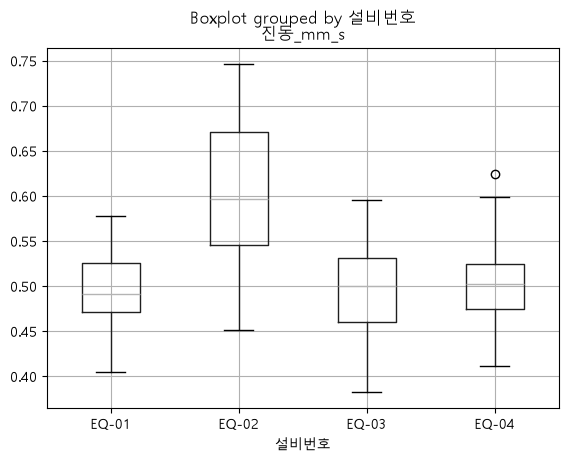
EQ-02의 진동 상자는 다른 설비보다 위쪽에 있고(가운데 선 약 0.60, 다른 설비 약 0.49~0.50) 길이도 길다. 예시 문장: "EQ-02는 온도도 진동도 다른 설비보다 들쭉날쭉하므로, EQ-02를 먼저 더 살펴볼 만하다. 다만 무엇 때문에 그런지는 그래프만으로 단정할 수 없다."결과 정리 & 퀴즈
더 많은 문제는 실습지에 있다.
describe()의 50%)이다. 평균은 박스플롯에 나오지 않는다.df["측정시간"] = pd.______(df["측정시간"])to_datetimeAI로 한 걸음 더 — 질문하고 코드 받아보기
- "박스플롯의 상자, 가운데 선, 수염, 동그라미 점이 각각 무엇을 뜻하는지 반 친구들 키에 비유해서 설명해줘."
- "히스토그램과 막대그래프는 어떻게 다른가요? x축의 차이를 중심으로 설명해줘."
- "두 값이 함께 움직이는데 원인은 아닌 생활 속 예를 3개만 알려줘."
df.boxplot(column="온도_섭씨", by="설비번호"))에,
정상 범위 295도와 305도를 빨간 점선 가로줄로 표시하는 코드를 만들어줘." (295~305℃는 이 과정에서 정한 학습용 정상 범위다.)
df.boxplot(column="온도_섭씨", by="설비번호")
plt.axhline(295, color="red", linestyle="--") # 정상 범위 아래 끝
plt.axhline(305, color="red", linestyle="--") # 정상 범위 위 끝
plt.show()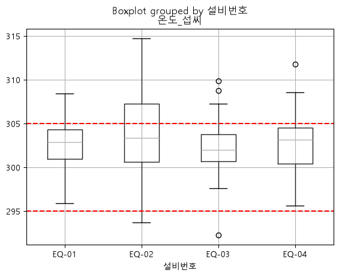
노트북 9단계 실행 결과. EQ-02의 상자 위 끝(307.3℃)만 305℃ 점선을 넘어간다.
- AI가 만든 코드는 직접 실행해서 그림이 기대한 모습인지 확인한다.
plt.axhline(가로줄 긋기),color,linestyle은 아직 배우지 않았다. 구경만 하자.- 코드 맨 위에
df = pd.read_csv(...)가 없다. 노트북 1단계에서df를 먼저 만들어 둬야 실행된다.
연습문제 — 불합격 기록을 설비별 막대그래프로
4차시 조건 검색과 오늘의 막대그래프를 합쳐 보자. 이 데이터의 합격여부는 1 = 합격, -1 = 불합격이다.
df[df["합격여부"] == -1]로 불합격 기록만 골라fails에 저장한다.fails["설비번호"].value_counts()로 설비별 불합격 건수를 센다.- 3단계와 같은
plt.bar(...)로 막대그래프를 그린다.
fails = df[df["합격여부"] == -1] # -1 = 불합격
fail_counts = fails["설비번호"].value_counts()
print(fail_counts)
plt.bar(fail_counts.index, fail_counts)
plt.xlabel("설비번호")
plt.ylabel("불합격 건수")
plt.show()
실행 결과(print 부분):
설비번호 EQ-04 8 EQ-02 8 EQ-03 3 EQ-01 2 Name: count, dtype: int64
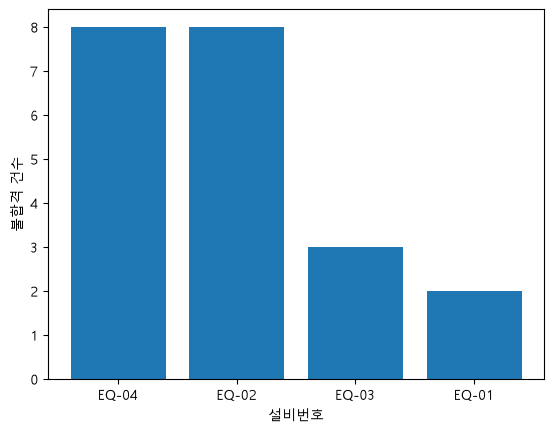
EQ-04와 EQ-02가 불합격 8건으로 같다. 그런데 기록 수는 EQ-04 50건, EQ-02 37건이다. 같은 8건이라도 기록이 적은 EQ-02 쪽 비중이 더 크다. 이런 비교는 7차시에 비율로 계산한다.AI로 재미있는 미니 프로그램 만들기 — 글자 막대그래프
fail_dict = {"EQ-01": 2, "EQ-02": 8, "EQ-03": 3, "EQ-04": 8}
print("설비별 불합격 건수 (글자 막대그래프)")
for name, count in fail_dict.items():
bar = "■" * count
print(f"{name}: {bar} {count}")설비별 불합격 건수 (글자 막대그래프) EQ-01: ■■ 2 EQ-02: ■■■■■■■■ 8 EQ-03: ■■■ 3 EQ-04: ■■■■■■■■ 8
- 숫자는 연습문제에서 센 설비별 불합격 건수다. 딕셔너리(2차시),
for(3차시), f-string(1차시)이 함께 쓰였다. - 처음 보는 두 가지:
.items()는 딕셔너리에서 이름과 값을 한 쌍씩 꺼낸다(name에 "EQ-01",count에 2 …)."■" * 3처럼 글자에 숫자를 곱하면 그 글자를 숫자만큼 이어 붙여■■■가 된다. - ■ 대신 좋아하는 이모지로 바꿔 달라고 하거나, 기록 건수(50, 47, 46, 37)로 바꿔 그려 보자. 너무 길면 숫자를 5로 나눠 달라고 요청해 보자.
과제(다음 차시까지)
Jupyter Notebook 한 개에 순서대로 작성하고, 그래프가 화면에 나온 상태로 제출한다. 그래프마다 해석 한 문장을 함께 적는다.
처리시간_sec 열의 히스토그램을 그리고, 처리시간이 주로 몇 초 근처에 몰려 있는지 한 문장으로 적는다.
공정명별 기록 건수를 value_counts()로 세어 막대그래프로 그리고, 가장 많은 공정과 가장 적은 공정을 적는다.
두께_nm, 세로축 진동_mm_s로 산점도를 그리고, 세 가지 모양(오른쪽 위 / 오른쪽 아래 / 흩어짐) 중
어디에 가까운지 적는다.
핵심 질문 → 데이터 연결
- 질문: 어느 설비의 온도 변동이 가장 큰가? 두 도구(Orange3/Matplotlib)에서 같은 결론이 나오는가?
- 데이터로 답하기: EQ-02다. Orange3 Box Plot과 Matplotlib 박스플롯 모두 EQ-02의 상자가 가장 길고, 숫자 요약에서도 EQ-02의 상자 범위가 300.6~307.3℃(폭 6.7℃), 표준편차가 5.4(다른 설비 3.0~3.2)로 가장 크다.
- 한 걸음 더: 네 설비의 평균 온도는 302~304℃로 비슷했다. 평균 표만 봤다면 놓쳤을 차이를 그래프가 보여줬다. EQ-02를 먼저 더 살펴볼 만하지만, 무엇 때문에 들쭉날쭉한지는 그림만으로 단정하지 않는다.
다음 차시 예고
- 오늘은 그림으로 "설비마다 다르다"를 봤다. 다음 시간에는
groupby로 설비별 평균·합격률을 직접 계산한다. - 오늘 연습문제의 질문 — 불합격 8건으로 같은 EQ-02(37건 중)와 EQ-04(50건 중)는 정말 같은가? — 에 비율로 답한다.